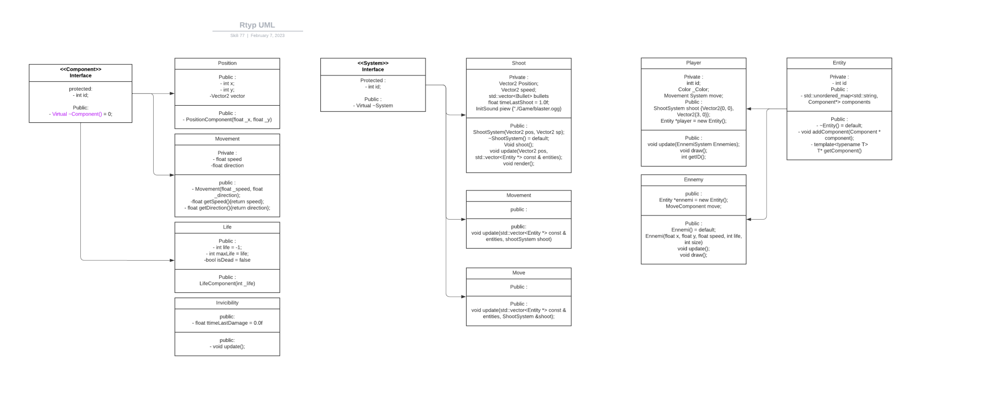

|
R-Type 3
|
Link to Github Projet: https://github.com/orgs/EpitechPromo2025/projects/145
The commit standard mentioned here is a set of guidelines for developers to follow when creating commit messages. The format for a commit message should start with a type of commit in square brackets, followed by a brief description of the change being made in the message. He create the commit like this:
**[ADD] {message}**
**[FIX] {message}**
**[DELETE] {message}**
Before merging a pull request, you need 2 reviews on it. This helps to maintain a clear and concise commit history and makes it easier for other developers to understand the changes made to the codebase over time.
To install conan and build the cmake, use this command:
To start the serve, use the commands docker-compose up –build
To start the client, you can use the CMake build system to compile the client code. You can use the command "cmake CMakeLists.txt" in the terminal to generate the necessary build files.
and then run the compiled client executable using "./run.sh". The run.sh script is a convenience script that runs the client executable with any necessary command-line arguments and environment variables.
| Button | Direction |
|---|---|
| Arrow Up | Top |
| Arrow Down | Down |
| Arrow Left | Left |
| Arrow Right | Right |
| Spacebar | Shoot |

Protocol
This project was made by: